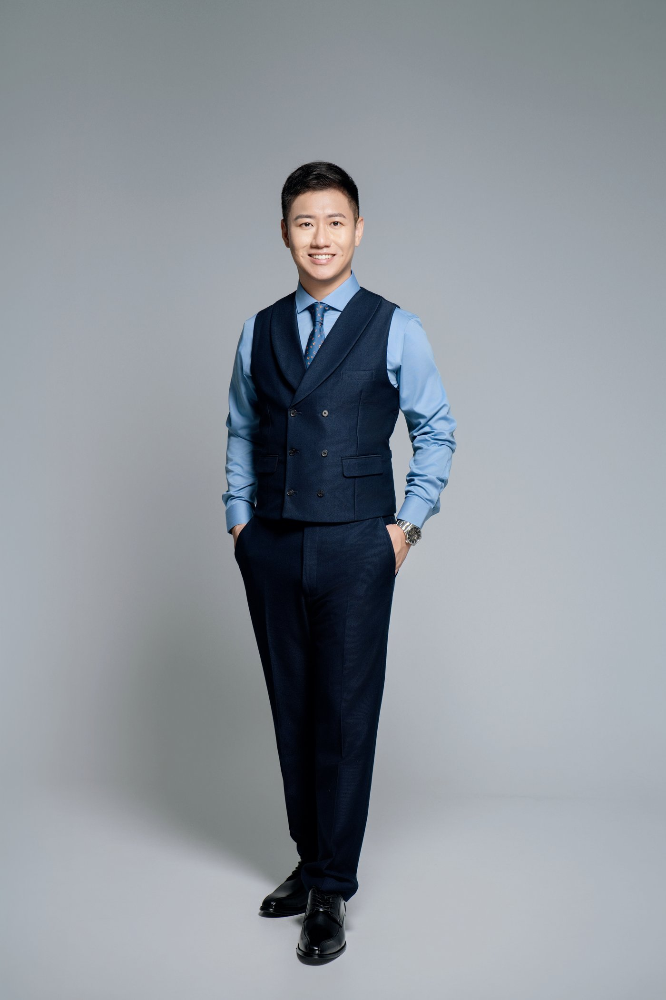
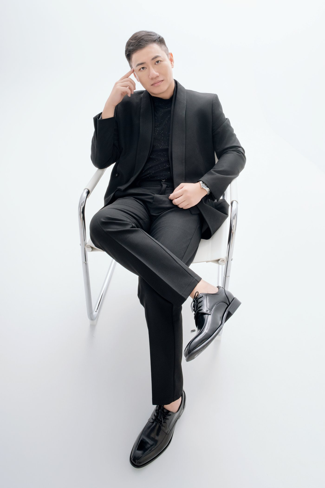
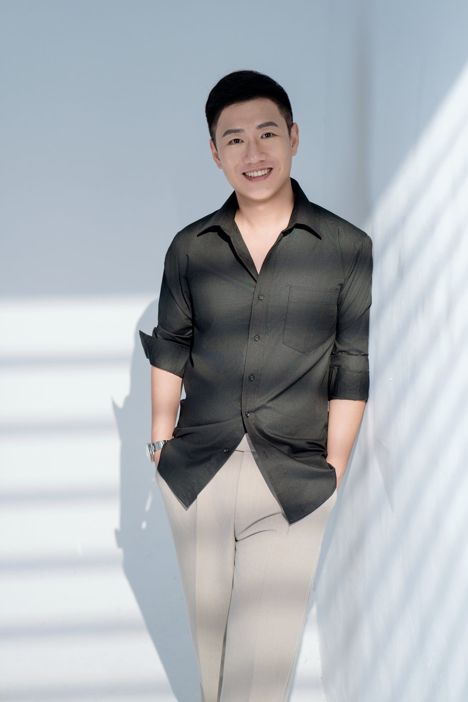

亞森銧國際法律事務所 所長 劉煒達
「除了專業以外，
律師個人形象
也很重要」
劉煒達律師，寫在 Google 評論裡的一句話
律師形象照案例
亞森銧所長劉煒達
Four Looks · 四套造型
- 01背心配領帶
- 02黑色西裝
- 03米灰西裝
- 04黑襯衫

Direction規劃與現場指導 ZoeyHair & Make-up妝髮 B.roomPhotography攝影 C.photos
這是劉煒達律師在 Google 評論裡寫下的一句話。
他是台中亞森銧國際法律事務所的創辦人，處理民刑事、家事、勞資、工程與商務案件，也擔任法律顧問。事務所官網讓委託人在見面前，先認識律師與服務內容。
2025 年 6 月，他來 CHUN.EN 拍形象照。
In This Article · 本文重點
- 改造：背心配領帶、黑色西裝、米灰西裝與黑襯衫，一次拍攝留下四套造型。
- 拍攝：拍攝前先討論方向，當天安排妝髮與動作指導，不需要先熟悉拍照姿勢。
- 應用：事務所官網首頁與所長介紹已使用這組照片；他在評論中提到「也提升客戶對我的信任」。
| 客戶 | 劉煒達，台中亞森銧國際法律事務所所長、創辦人 |
|---|---|
| 拍攝時間 | 2025 年 6 月 |
| 服務內容 | CHUN.EN 律師形象照拍攝，包含拍攝前規劃討論、妝髮及現場動作指導 |
| 本案造型 | 4 套：背心配領帶、黑色西裝、米灰西裝、黑襯衫 |
| 照片使用位置 | 事務所官網首頁、〈關於我們〉所長介紹 |
改造的價值 · Transformation
一次拍攝，正式和親切的樣子都有了
這次拍攝安排背心與領帶、黑色西裝、米灰西裝，以及捲袖黑襯衫。服裝、表情與姿勢一起調整，拍出正式與輕鬆的不同樣子。

背心配領帶
藍襯衫、深藍背心與領帶，保留正式的服裝層次。這套留下灰色背景的全身微笑照，也拍了深色背景、手靠近臉部的近景。

黑色西裝
全黑服裝，翹腳坐在白色椅子上。黑色服裝與明亮場景形成鮮明對比，坐姿與服裝輪廓都顯得俐落。

米灰西裝
內搭白色高領，搭配明亮的白色場景與笑容，讓畫面顯得親切。

黑襯衫
搭配米色長褲，袖口捲起，靠在有窗光條紋的牆邊，呈現較輕鬆的穿著與表情。
同一套服裝，也能拍出不同表情與構圖。背心造型的全身照與近景，就提供了兩種選擇。
拍攝的價值 · The Shoot
拍攝前討論方向，現場有人引導動作
開拍前，Zoey 先與他討論拍攝方向；拍攝當天安排妝髮與動作指導，協助調整鏡頭前的姿勢。
第一次拍形象照，很多人擔心手不知道放哪裡、笑起來不自然。現場會依畫面需求引導表情、眼神與姿勢，不需要事先背好一套動作，只要專心在鏡頭前就好。
他在評論裡，特別提到拍攝前的討論與現場協助：
非常感謝Zoey老師開拍前細心規劃、討論，開拍過程中的專業妝髮及動作指導，讓我獲得一系列專業、優質的形象照。劉煒達｜Google 評論節錄
應用的價值 · In Use
事務所官網的首頁和所長介紹，都用上了
亞森銧國際法律事務所官網的首頁與所長介紹，分別用了背心與米灰西裝這兩套。
使用背心配領帶的全身照，灰色背景、雙手插口袋，帶著笑容。首頁代表整間事務所，這張全身照看起來正式、俐落。
使用米灰西裝、白色高領的照片，搭配明亮背景與笑容。放在學經歷與專業介紹旁，照片也跟著親切一些。
一次拍攝留下四套造型，官網這兩個位置選用了其中兩套。選圖時，可以一起比較服裝、表情、構圖與版面比例。
他對這次拍攝的回饋
本人創辦亞森銧國際法律事務所，提供商務、勞資、資產規劃等法律顧問服務，除了專業以外，律師個人形象也很重要，非常感謝Zoey老師開拍前細心規劃、討論，開拍過程中的專業妝髮及動作指導，讓我獲得一系列專業、優質的形象照，也提升客戶對我的信任。專業妝髮、形象照唯一指名Zoey老師!劉煒達｜亞森銧國際法律事務所 創辦人・律師｜Google 評論
你也是律師？拍之前先想這三個地方
Before the shoot事務所官網首頁
先看事務所希望呈現的風格，再決定服裝、表情與構圖，並確認人物照片和首頁文字怎麼搭配。
律師介紹頁
這裡讓委託人認識你本人，可以把表情、穿著與旁邊的學經歷介紹一起考慮。
提案、講座與媒體
先確認需要橫幅、方形還是直式照片，以及哪些地方要放標題與文字，拍攝時預留相應的空間。
想清楚照片要用在哪裡，再決定拍幾套、穿什麼。部分用途可以透過同一套服裝的不同表情與構圖完成。律師袍與服裝準備，可參考〈律師形象照怎麼拍？服裝、律師袍、用途與價格〉。
下一步 · Next
想準備一組用得上的律師形象照？
事務所官網、律師介紹、提案與講座，需要的照片各有不同。先整理用途，再看這次需要哪一種協助。
想先拍一組好用的形象照
C.photos 品牌／職業形象照，拍攝前確認用途與主要版位，包含妝髮及現場表情、姿勢引導，拍攝當天完成方案內選片。
了解 C.photos 形象照 →想從角色定位、服裝到妝髮一起規劃
商業視覺整合企劃，從現在的角色與影像用途出發，由同一團隊統籌服裝選品、定裝、妝髮與拍攝。服裝商品費用另計。
了解商業視覺整合企劃 →兩種服務交件後，都有自交件日起 90 日的使用支援，協助選圖、版位使用與影像部署模擬器操作。
不確定適合哪一種也沒關係，可以先用 LINE 告訴我們照片想用在哪裡，我們再依用途給建議。
LINE 聊聊常見問題
FAQ律師形象照要拍幾套？
先看照片要放在哪裡。劉煒達律師這次拍了四套，事務所官網首頁和所長介紹各用了其中一套。同一套服裝也能透過不同表情、構圖與裁切提供多種版本；套數依實際用途安排。
律師形象照一定要穿西裝、打領帶嗎？
可以依用途與想呈現的風格選擇。劉煒達律師的四套造型裡，有背心配領帶、黑色西裝，也有米灰西裝配白色高領、黑襯衫配米色長褲。事務所官網的所長介紹，用的就是沒打領帶的米灰西裝照片。
照片可以放在事務所官網嗎？
可以。付清款項後，照片可以用在個人與自身事業的對外場合，例如官網、社群、名片與簡報。轉授權、轉售或提供第三方商業使用，需另外取得 CHUN.EN 書面同意，實際使用範圍依合約約定。
不習慣拍照、不會擺姿勢，也能拍律師形象照嗎？
可以。CHUN.EN 的攝影師會依畫面需求引導表情、眼神與姿勢，不需要事先熟悉拍照動作。劉煒達律師也在本案評論中提到現場的「專業妝髮及動作指導」。目前 C.photos 的流程會分段檢視畫面，確認角度、表情與構圖，拍攝當天完成方案內選片。

CHUN.EN 創辦人暨品牌主理人
服裝設計師出身，歷經台灣、上海與廣州共 10 年設計工作，其後投入造型領域逾 14 年。以商業視覺定位為核心，統整服裝、妝髮與影像，協助專業工作者與企業領導者，建立一致、清楚且有系統的專業形象。